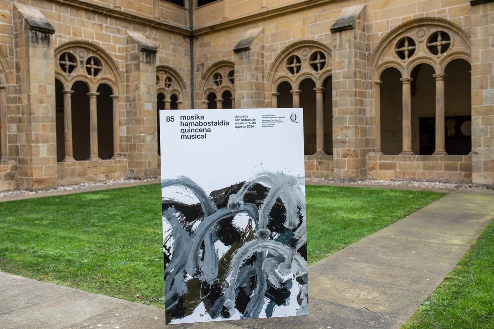

03 · Premios y reconocimientos
Una trayectoria premiada
1980
Primer Premio, Bienal Plástica de VitoriaVitoria-Gasteiz
1981
Primera exposición individual, Sala de la Caja LaboralGernika-Lumo

1982
Certamen de Artistas Noveles de GipuzkoaPremio
1993
Premio Bancaixa de Pintura y EsculturaValencia
1997
Gana el concurso Bilbao Ría 2000 con «A la deriva»Bilbao
2002
II Certamen de Escultura Pública, Fundación Caja Vital KutxaPremio
2005
Primer Premio de escultura, 125 aniversario del Colegio de Ingenieros de Caminos del País VascoBilbao
2024
Cartel oficial de la 85 Quincena Musical de San SebastiánÚltimo encargo público

Obra en colecciones y espacio público
Museo San Telmo · Donostia
Museo Diocesano · Donostia
Museo de Bellas Artes de Bilbao
Artium · Vitoria-Gasteiz
Museo de Bellas Artes de Álava
Gobierno Vasco
Diputación de Gipuzkoa
Diputación de Bizkaia
Juntas Generales de Bizkaia
Kutxa Fundazioa
Universidad Pública de Navarra
Fundación Bancaja · Valencia
Ayuntamiento de Bilbao
Ayuntamiento de Donostia
Ayuntamiento de Eibar
Ayuntamiento de Lemoa
Ayuntamiento de Pinto · Madrid
Ayuntamiento de Ceutí · Murcia
Museo Nacional de Nicaragua